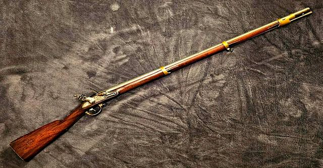

Where It All Began
A Brief History of Firearms
The story of the firearm stretches back over 600 years — from Chinese fire lances and primitive hand cannons to the precision semi-automatic pistols and bolt-action rifles of today. Each era of conflict and craftsmanship pushed the design forward.

A flintlock musket — ca. 1700s · Replace with your own photo
"An armed society is a polite society." — Robert A. Heinlein
-
~1300
Hand Cannons — The earliest personal firearms emerge in China and spread to Europe through the Silk Road.
-
1500s
Matchlock & Wheel Lock — Ignition systems evolve, making firearms more practical for infantry.
-
1700s
Flintlock Era — The dominant military and hunting firearm for over a century. Revolutionary War-era muskets defined an age.
-
1836
Colt Revolver — Samuel Colt patents the revolver, changing personal defense and warfare forever.
-
1873
"The Gun That Won the West" — Winchester Model 1873 becomes one of the most iconic lever-action rifles in history.
-
1911
Colt 1911 — John Browning's masterpiece semi-automatic pistol adopted by the U.S. Army. Still revered today.
-
1947
AK-47 — Mikhail Kalashnikov designs one of the most produced firearms in history.
What's Out There
Firearm Categories
Firearms fall into several major categories, each with distinct mechanisms, purposes, and iconic models. Below is an overview — an ordered list of categories, each with an unordered list of notable examples.
-
Pistols & Handguns
- Colt 1911
- Glock 17/19
- Sig Sauer P365
- Smith & Wesson M&P
- Walther PPK
-
Revolvers
- Colt Single Action Army
- S&W Model 29 (.44 Magnum)
- Ruger GP100
- Taurus Judge
-
Rifles — Bolt Action
- Remington 700
- Winchester Model 70
- Mauser K98
- Ruger American
-
Rifles — Semi-Automatic
- AR-15 / M16 Platform
- AK-47 / AKM
- Springfield M1A
- Ruger Mini-14
-
Shotguns
- Mossberg 500
- Remington 870
- Benelli M4
- Winchester Model 12
-
Lever-Action Rifles
- Winchester Model 1873
- Henry Big Boy
- Marlin 336
- Rossi R92
The Craft
Gunsmithing
Gunsmithing is one of the oldest and most respected trades in American history. A gunsmith is part machinist, part craftsman, part historian. The work ranges from simple cleaning and maintenance to complete custom builds — fitting stocks, machining barrels, tuning triggers, and applying finishes.
I've personally performed basic maintenance, stripped and cleaned multiple platforms, and have a deep interest in eventually taking formal gunsmithing coursework. There's nothing quite like understanding exactly how a mechanism works — every spring, pin, and sear.
Field Stripping
The foundation. Every owner should know how to disassemble, clean, and reassemble their firearm safely.
Trigger Work
Polishing sears, adjusting pull weight, and installing aftermarket triggers for improved precision.
Stock Fitting
Custom fit of wood or synthetic stocks to the shooter's measurements for consistent cheek weld and eye relief.
Barrel & Cerakote
Custom barrel threading and Cerakote finishing for corrosion resistance and custom aesthetics.
▶ Featured Video
By The Numbers
Firearms Data Visualization
The following interactive visualization is embedded from Tableau Public. It shows data related to firearms in the United States — ownership rates, manufacturing trends, or historical production data depending on the embed you choose.